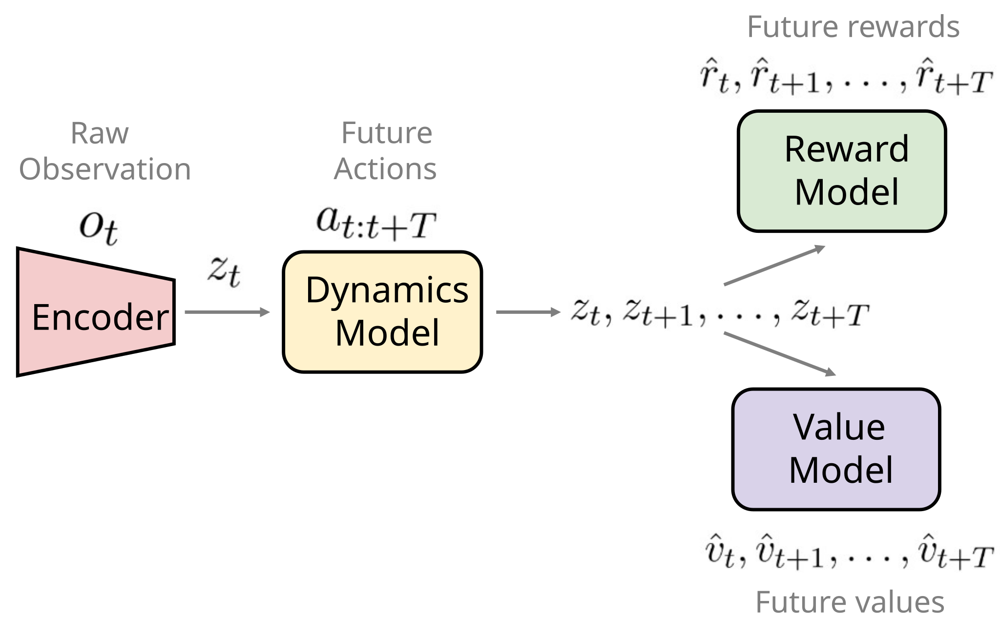
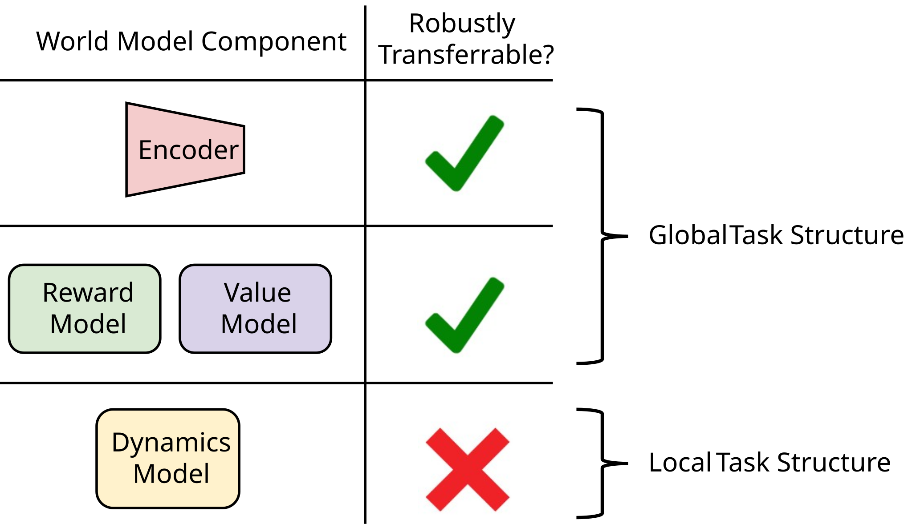
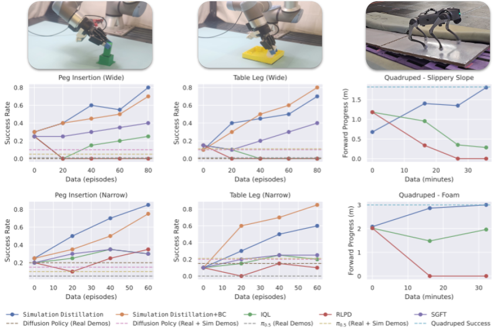
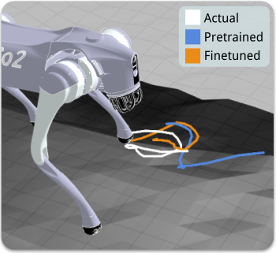

Simulation Distillation
Pretraining World Models in Simulation for Rapid Real-World Adaptation
Rapid Real-World Adaptation
Rapid Real-World Adaptation
Simulation Distillation (SimDist) rapidly overcomes the sim-to-real dynamics gap through adaptation in the real world, resulting in substantial gains in task execution on both precise manipulation and quadrupedal locomotion tasks.
Table Leg
Slippery Slope
Foam
Why World Models?
Why World Models?
End-to-end RL finetuning in the real world often forgets useful priors from simulation. SimDist keeps global task structure fixed and updates only what changes most across domains: dynamics.
End-to-end RL Finetuning is Hard
Sim-to-real RL policies fail under dynamics mismatch. Standard end-to-end policy finetuning algorithms entangle learning representations, dynamics, and returns, forcing relearning of the entire task structure in the new domain.
World Models Factorize Task Structure

We argue that world models are the right vehicle for transferring experience from simulation to reality. World models automatically factorize task structure in a form we can exploit for efficient real-world adaptation.
Leveraging Simulation for Transferable Priors
Domain randomization and privileged state supervision yield robust encoders and reward/value models in simulation.
Preserve Transferable Structure

State encoders, rewards, and values capture global structure, such as which objects matter, their semantic roles, and distances to goal configurations. Our key insight is that this global structure is largely invariant across simulation and reality, whereas local dynamics are not.
Introducing Simulation Distillation
Introducing Simulation Distillation
Simulation Distillation (SimDist) is a scalable framework that distills structural priors from a simulator into a latent world model and enables rapid real-world adaptation via online planning and supervised dynamics finetuning.
Hover over a box to view its detail below.
Real-World Results
Real-World Results
Success rate for two manipulation tasks, computed over 20 trials, and average forward progress for two quadruped locomotion tasks, averaged across all 15 trials (3 speeds, 5 trials each), as a function of real-world finetuning data. For manipulation, we consider two difficulties: initial conditions drawn from a Narrow or Wide grid.
SimDist exhibits rapid and consistent improvement with limited data by finetuning only the latent dynamics model while planning with frozen reward and value models. In contrast, direct policy finetuning with the baselines shows limited or no improvement under the same data budgets.
Hover a plot to preview its video. Click to expand.

Interactive charts load here from assets/data/results.json.
Successful Return Model Transfer
Successful Return Model Transfer
The planner used by SimDist can only improve behavior if it can reliably distinguish trajectories with high and low returns. This requires both accurate dynamics prediction and successful transfer of reward and value models. We examine value transfer below, which plots predicted values over time for successful and failed trajectories.
For the successful rollout, predicted value increases consistently over time, while remaining lower for the failed trajectory. Thus the transfered encoder and value function can reliably discriminate between successful and failed trajectories.
Improving Dynamics Prediction with Finetuning
Improving Dynamics Prediction with Finetuning
Next, we examine the effect finetuning has on dynamics prediction accuracy. Adapting the dynamics model is essential for effective planning, as both the reward and value estimates are computed over predicted trajectories.
Finetuning drastically lowers dynamics prediction loss for a held out quadruped slippery slope trajectory.
During this trajectory, the front-left foot slips.

At this same instant, the finetuned model correctly anticipates the future slippage, while the pretrained model fails to do so.
Planning Under Adapted Dynamics
Planning Under Adapted Dynamics
Because we finetune only the dynamics, adaptation is fast: improved predictions immediately reshape planning behavior, driving the performance gains seen in our results.
BibTeX